Guia Rápido dos principais processadores da INTEL, AMD E APPLE em 2022
Atualmente os processadores para desktop vem se tornando cada vez mais versáteis, existem modelos para alta performance, com vídeo integrado, com diversos núcleos e variadas frequências. Mas dentre tantos modelos no mercado qual seria o ideal para o seu computador? Este post visa informar o usuário dos principais modelos de processadores disponíveis, em especial focando nos modelos mais recentes das fabricantes INTEL, AMD e APPLE. Sem mais delongas vamos aos chips.
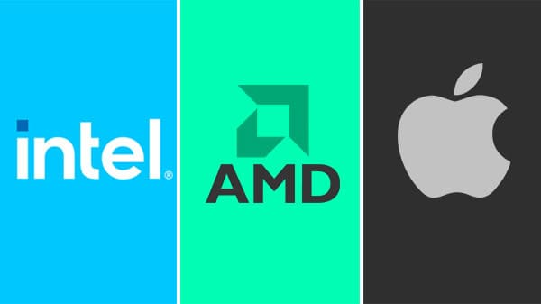Processadores Intel
A Intel é conhecida no mundo todo por seus processadores. E atualmente os principais processadores são o Intel core i3, i5, i7 e i9, e cada processador possui terminologias com letras e números que indicam sua geração e características próprias.
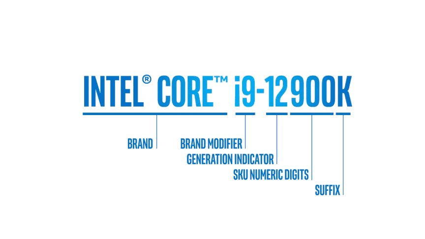Na terminologia da intel cada letra possui um significado diferente:
- E: Economia de energia;
- H: High-Performance Graphics;
- K: Unlocked;
- M: Linha mobile;
- Q: Quad-Core;
- R: Componentes com maior poderio gráfico;
- S: Modelos especiais;
- T: Power Optimized;
- U: Ultra Low Power;
- X: Chips avançados eXtreme;
- Y: Low Power;
Processador Intel Core i3
O Intel Core i3 é a linha de entrada da marca, pois é o mais barato e atende um público que utiliza o computadores e notebooks para tarefas simples do dia a dia. O último processador lançado atualmente é da 12ª geração, como o Intel Core i3-12300. Ele possui 4 núcleos e 8 threads com 12 MB de memória cache e uma frequência máxima de 4.40 GHz.
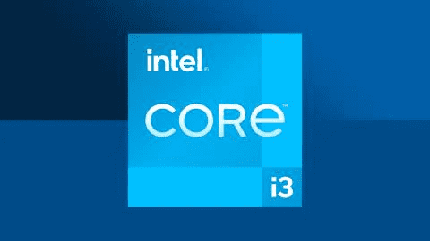| Intel Core i3-12300 | |||
|---|---|---|---|
| Nº de Núcleos | Nº de Threads | Memória cache | Frequência máxima |
| 4 | 8 | 12 MB | 4.40 GHz |
Processador Intel Core i5
O Intel Core i5 é a linha intermediária da marca, pois tem um preço razoável e atende um público que utiliza o computadores e notebooks para tarefas simples do dia a dia e outras tarefas que precisam de mais processamento, como jogar. O último processador lançado atualmente é da 12ª geração, como o Intel Core i5-12600K. Ele possui 10 núcleos e 16 threads com 20 MB de memória cache e uma frequência máxima de 4.90 GHz.
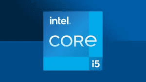| Intel Core i5-12600K | |||
|---|---|---|---|
| Nº de Núcleos | Nº de Threads | Memória cache | Frequência máxima |
| 10 | 16 | 20 MB | 4.90 GHz |
Processador Intel Core i7
O Intel Core i7 é a antiga top de linha da marca, agora serve para quem quer ter um “top de linha” com um preço um pouco mais barato e atende um público que utiliza o computadores e notebooks para tarefas que precisam de mais processamento, como jogar. O último processador lançado atualmente é da 12ª geração, como o Intel Core i5-12600K. Ele possui 12 núcleos e 20 threads com 25 MB de memória cache e uma frequência máxima de 5 GHz.
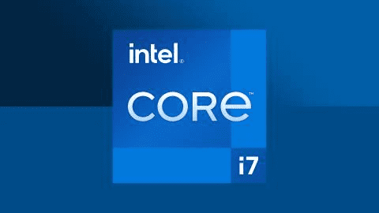| Intel Core i7-12700K | |||
|---|---|---|---|
| Nº de Núcleos | Nº de Threads | Memória cache | Frequência máxima |
| 12 | 20 | 25 MB | 5.00 GHz |
Processador Intel Core i9
O Intel Core i9 é a top de linha da marca, pois tem um preço elevado mas que atende mais que o suficiente todos os públicos que utilizam computadores e notebooks para tarefas que precisam de muito processamento, como jogos e aplicações muito pesados. O último processador lançado atualmente é da 12ª geração, como o Intel Core i9-12900KS. Ele possui 16 núcleos e 24 threads com 30 MB de memória cache e uma frequência máxima de 5.50 GHz.
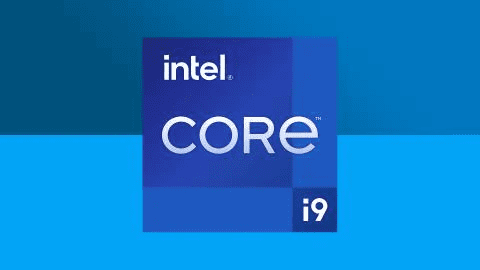| Intel Core i9-12900KS | |||
|---|---|---|---|
| Nº de Núcleos | Nº de Threads | Memória cache | Frequência máxima |
| 16 | 24 | 30 MB | 5.50 GHz |
Processadores AMD
Série Athlon - a porta de entrada dos AMD
Disponível tanto para pcs quanto para notebooks, a linha athlon caracteriza-se por processadores de entrada focados em tarefas básicas, acompanhado de vídeo integrado.
Dentre as principais vantagens desse chip podemos citar: Preço baixo, versatilidade ( disponível tanto para notebook ou pc), sem necessidade de placa de vídeo, já integrada(vega graphics).No caso das desvantagens, se você pensa em um processador para jogos ou edição de vídeo, pode descartar o athlon, pois trata-se de um modelo de baixo desempenho feito para tarefas do dia a dia. confira algumas especificações deste modelo:
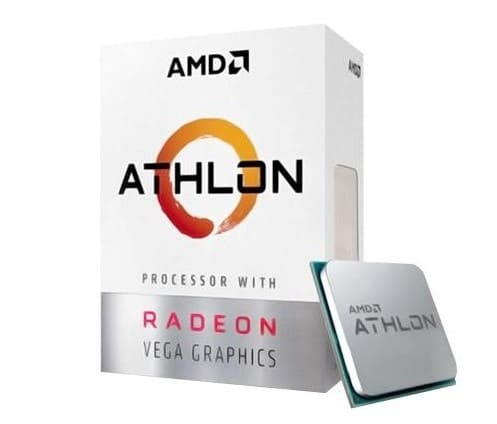| Ficha técnica, com as principais especificações | |
|---|---|
| Modelo | AMD Athlon 3000 G |
| Núcleos e Threads | 2/4 |
| Frequência | 3.5ghz |
| Consumo energético (TDP) | 35w |
| Arquitetura | 14nm |
| Soquete compatível | AM4 |
| Nomenclaturas | G (vídeo integrado) |
| Cachê | L2: 1MB L3: 4MB |
Processadores AMD - Série Ryzen - Eficiência, muitos threads e custo benefício
Em 2016 a AMD, após muitos anos de reclamações advindas de seu público sobre processadores que esquentavam muito e não entregavam o desempenho desejado, reformulou suas antigas linhas trazendo naquele momento a novíssima linha Ryzen de processadores. Com uma nova arquitetura, consumo energético bastante reduzido, desempenho interessante e preço convidativo, os Ryzen 3, 5 e 7 chegaram ao mercado competitivos para com a concorrência.
Três gerações depois, será que essa linha continua mantendo a essência do custo benefício? confira a seguir. Nesta quarta revisão, é possível identificar os processadores através da arquitetura zen 3 e litografia de 7 nm presente nos mesmos. Dito isso vamos começar pela porta de entrada até o mais alto desempenho:
Ryzen 3 4100
A série 3, é de entrada contém poucos núcleos e threads sendo um chip voltado a atividades simples como: navegar na web, estudos e realizar edição de textos e planilhas com performance decente.
Para o segmento de entrada recomendamos o Ryzen 3 4100 é um processador recente, lançado em abril de 2022, que tem como vantagem o preço atrativo de R$ 500 a 600 reais, com single thread potente e litografia de 7 nm que com baixo consumo energético.
Entretanto vale citar como desvantagem que este processador não acompanha vídeo integrado e por mais que seja um processador de quarta geração tem possui arquitetura zen 2. Confira mais algumas especificações:
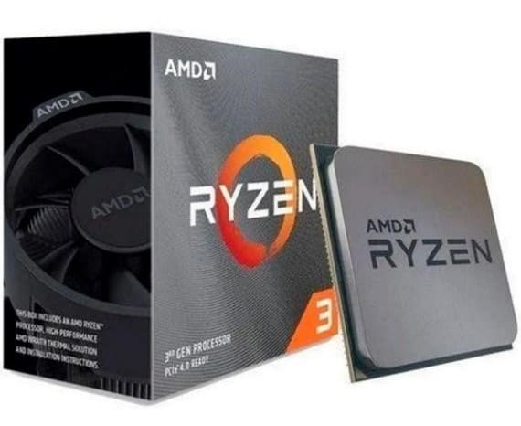| Ficha técnica, com as principais especificações | |
|---|---|
| Modelo | AMD Ryzen 3 4100 |
| Núcleos e Threads | 4/8 |
| Frequência | 3.8ghz |
| Consumo energético (TDP) | 65w |
| Arquitetura | 7nm zen2 |
| Soquete compatível | AM4 |
| Nomenclaturas | - |
| Cachê | L2: 256KB L3: 2MB |
Ryzen 5 5600x
A série 5, é mais intermediária com performance mais interessante, voltado para tarefas um pouco mais pesadas como: games e edição de vídeo sendo vista geralmente como o custo benefício ideal.
No segmento intermediário recomendamos o Ryzen 5 5600x, lançado em junho de 2020 esse chip tem como vantagem sua performance aprimorada como indica a sigla x na nomenclatura, a qual será muito interessante para um melhor framerate em jogos e edições de vídeo mais suaves. Sua abundância em núcleos e threads também permitem uma maior multitarefa sem forçar demais o processador.
O preço também é competitivo uma vez que este modelo é encontrado na faixa dos R$ 1300 a 1400 reais, sendo mais custo benefício que modelos como o ryzen 5 5600g.
Como desvantagem há muitas reclamações sobre o cooler que acompanha o chip, os usuários alegam que este não tem capacidade de resfriar o processador como deveria, encarecendo o produto e forçando o usuário a comprar um cooler mais potente por fora.
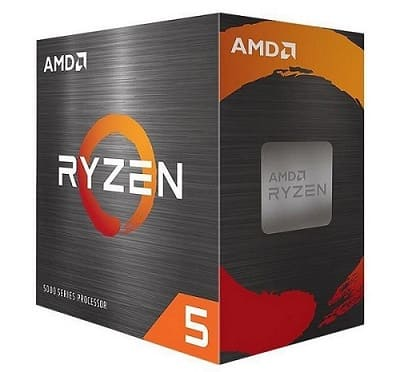| Ficha técnica, com as principais especificações | |
|---|---|
| Modelo | AMD Ryzen 5 5600x |
| Núcleos e Threads | 6/12 |
| Frequência | 3.7 até 4.6 ghz |
| Consumo energético (TDP) | 65w |
| Arquitetura | 7nm zen3 |
| Soquete compatível | AM4 |
| Nomenclaturas | X - alta performance |
| Cachê | L2: 3MB L3: 32MB |
Ryzen 7 5800x
A série 7 é focada em alta performace, com esse processador o usuário pode fazer tudo que a linha 5 faz com um pouco mais de folga. Indicamos o Ryzen 7 5800x, lançado em novembro de 2020, pertence à categoria de alto desempenho indicado pela letra x, este processador irá executar as tarefas mais pesadas tranquilamente desde edição de vídeo, jogos, stream de jogos, desenvolvimento de games, modelagem 3d, entre outros.
Indicado para usuários avançados que o irão usá-lo de maneira profissional por muito tempo. Sua faixa de preço atual é de R$ 1600 a 1700 o preço pode ser visto como um ponto negativo visto a necessidade de investimento em outros componentes de hardware de mesmo porte para manter um desempenho equilibrado.
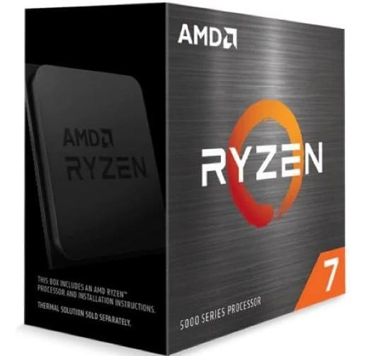| Ficha técnica, com as principais especificações | |
|---|---|
| Modelo | AMD Ryzen 7 5800x |
| Núcleos e Threads | 8/16 |
| Frequência | 3.8 até 4.7 ghz |
| Consumo energético (TDP) | 105W |
| Arquitetura | 7nm zen3 |
| Soquete compatível | AM4 |
| Nomenclaturas | X - alta performance |
| Cachê | L2: 4MB L3: 32MB |
Processadores Apple
Apple M1
O M1 parece extremamente promissor com 16 bilhões de transistores. O M1 é também o primeiro chip de computador pessoal construído com tecnologia de processamento de 5 nanômetros. A Apple conseguiu encaixar 16 milhões de transistores em um único chip M1. Estão disponíveis nos dispositivos: MacBook Air, iPad Pro (5ª geração), iMac 24 (2021), Mac Mini, iPad Air (2022).
| Apple M1 | |
|---|---|
| Nº Núcleos da CPU | 8 |
| Nº Núcleos de desempenho | 4 |
| Nº Núcleos de eficiência | 4 |
| Nº Núcleos da GPU | 7 ou 8 |
| Nº Núcleos Neural Engine | 16 |
| Memória RAM suportada | 16 GB |
Apple M1 Pro
Melhorando a arquitetura transformadora do M1, o M1 Pro oferece um desempenho incrível com o consumo de energia mais eficiente da indústria usando a tecnologia de processamento de cinco nanômetros líder da indústria, o M1 Pro tem 33,7 bilhões de transistores, mais que o dobro do que existe no M1. Além disso, o M1 Pro pode ser configurado com até 32 GB de memória unificada rápida e até 200 GB/s de largura de banda da memória, permitindo que profissionais de criação, como artistas 3D e desenvolvedores de games. Estão disponíveis nos dispositivos: MacBook Pro 14, MacBook Pro 16 (2021).
| Apple M1 Pro | |
|---|---|
| Nº Núcleos da CPU | 8 ou 10 |
| Nº Núcleos de desempenho | 6 ou 8 |
| Nº Núcleos de eficiência | 2 |
| Nº Núcleos da GPU | 14 ou 16 |
| Nº Núcleos Neural Engine | 16 |
| Memória RAM suportada | 32 GB |
Apple M1 Max
O M1 Max vem com a mesma CPU poderosa de 10 núcleos que o M1 Pro e agrega uma GPU incrível de 32 núcleos para desempenho gráfico até quatro vezes mais rápido que o M1. Com 57 bilhões de transistores M1 Max vêm com um mecanismo de mídia criado pela Apple que acelera o processamento de vídeo enquanto maximiza a duração da bateria M1 Max vai ainda mais longe, com codificação de vídeo até duas vezes mais rápida do que no M1 Pro. Estão disponíveis nos dispositivos: MacBook Pro 14, MacBook Pro 16 (2021), Mac Studio.
| Apple M1 Max | |
|---|---|
| Nº Núcleos da CPU | 10 |
| Nº Núcleos de desempenho | 8 |
| Nº Núcleos de eficiência | 2 |
| Nº Núcleos da GPU | 24 ou 32 |
| Nº Núcleos Neural Engine | 16 |
| Memória RAM suportada | 400 GB |
Apple M1 Ultra
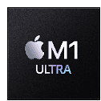O chip M1 Ultra tem CPU poderosa de 20 núcleos, com 16 núcleos de alto desempenho e quatro de alta eficiência. Em comparação ao chip de 16 núcleos mais rápido disponível para desktop PC, o M1 Ultra oferece rendimento com múltiplas threads 90% superior na mesma faixa de consumo de energia.
Com o chip M1 Ultra, as possibilidades da arquitetura de memória unificada da Apple também se expandiram,o chip M1 Ultra em termos de memória gráfica para lidar com cargas de trabalho imensas que exigem muito da GPU, como trabalhar com geometria 3D complexa e renderizar uma quantidade enorme de cenas.
| Apple M1 Ultra | |
|---|---|
| Nº Núcleos da CPU | 10 |
| Nº Núcleos de desempenho | 8 |
| Nº Núcleos de eficiência | 2 |
| Nº Núcleos da GPU | 24 ou 32 |
| Nº Núcleos Neural Engine | 16 |
| Memória RAM suportada | 400 GB |